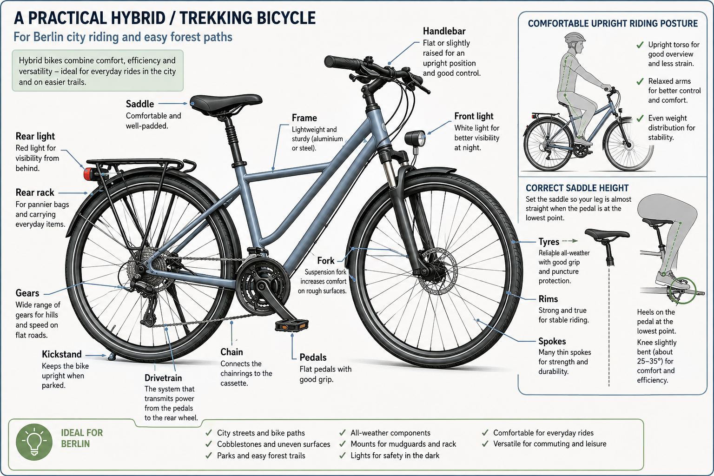
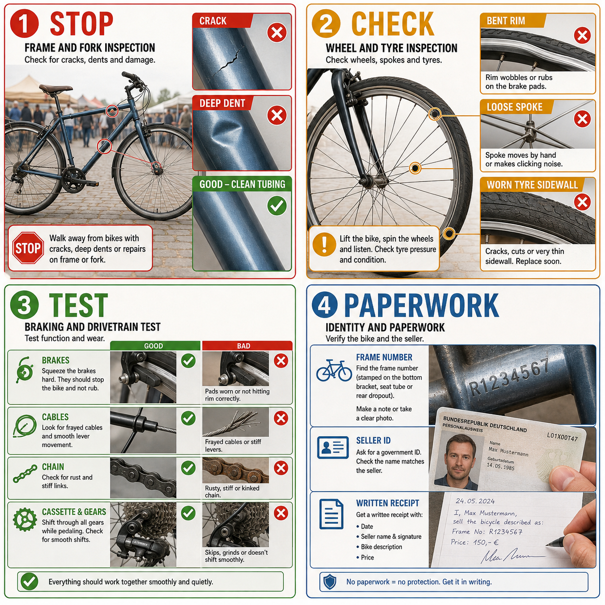
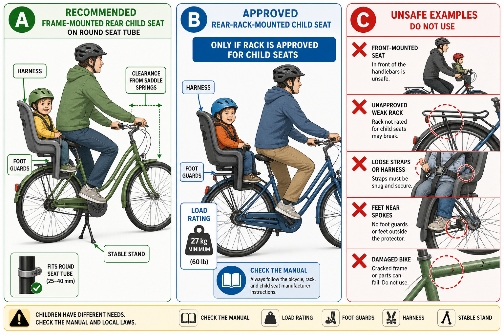

Printable quick reference · Evidence and sources
Mission: choose one bicycle for Berlin streets, easy Tegel forest paths and a toddler child seat.

Start with a trekking bike or upright hybrid. It is a sensible compromise: comfortable in traffic, equipped for weather and luggage, and capable of smooth unpaved paths. Avoid treating it as a mountain bike; with a child seat, stay on easy, firm paths.
Fit beats the label “men’s” or “women’s”. Ride it. You should reach the brake levers without stretching, start and stop confidently, and have a slight knee bend at the bottom of the pedal stroke. A shop size guide may narrow the search, but only a ride confirms it.

Look closely at the frame, fork, head tube, bottom bracket and rear rack mounts. Cracks, deep dents, buckling, severe corrosion or an altered frame number are walk-away defects.
Lift and spin both wheels. Squeeze the brakes. Shift through every gear. Listen for grinding, clicking and creaking. A five-minute test ride should include starts, stops, a firm brake test and a small incline.

Bring the exact seat manual—or decide to buy the seat new later—and check the complete combination. A rack-mounted seat requires a rack explicitly approved for child seats; the ADFC guidance gives 27 kg as the relevant minimum load rating for this use, alongside width and tube-diameter constraints. A frame-mounted rear seat may be better when the seat tube and frame shape are compatible.
Record the frame number and compare it with a written receipt or contract. Ask for the seller’s ID and an ownership explanation; Berlin Police recommends documenting the bicycle and both parties. Refusal, a rushed cash-only story, multiple identical bikes or a ground-off number means leave.
Plan around €300–500 for a sound trekking/hybrid bike. €150–300 can buy an older city bike; €250–450 a better hybrid. Subtract tyres, brake pads, chain, lights or rack work euro-for-euro. Pay extra only for condition, documentation and a recent service—not for a fashionable logo.
Before you go, answer from memory: what are the five things that must all be “yes”?
Your field exercise: at the market, inspect three bikes without buying. For each, write one green flag, one concern and your maximum price. Ask a follow-up question here if any component or warning sign is unclear.
Primary sources: ADAC used-bike guide; ADFC trekking bikes; ADFC child seats; Berlin Police.